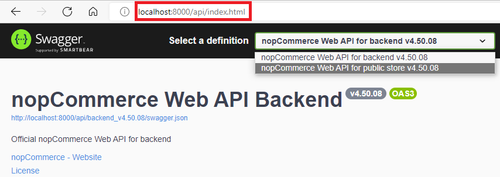
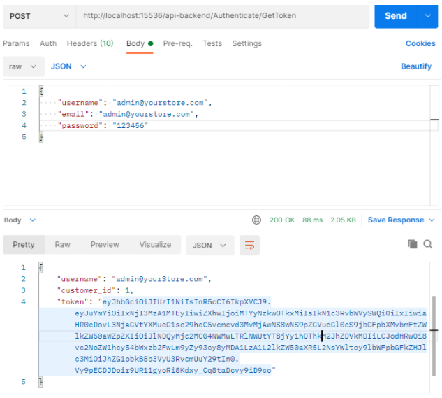
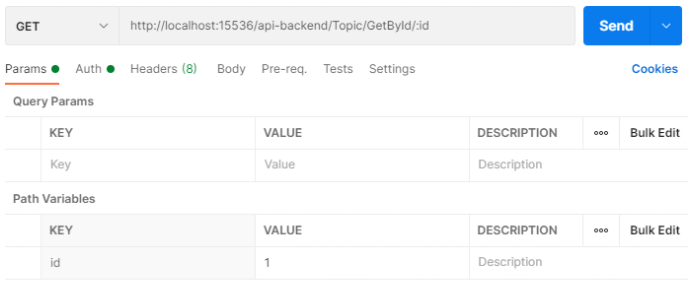
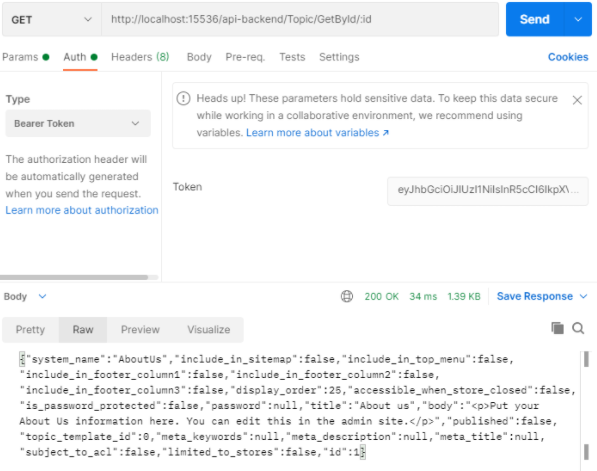

Web API 文件
簡介
nopCommerce 的 Web API 提供了對所有平台功能的存取權限，以及對資料庫實體的完整控制。這是一個根據 OpenAPI 3.0 specification (OAS) 所建置的 RESTful API。透過使用 Swagger UI 之類的工具，或是在 SwaggerHub 平台 中，您可以將 OAS 合約轉換為互動式 API 主控台，讓開發人員能夠與 API 進行互動，並快速了解 API 的預期運作方式。nopCommerce 提供了一套 API，允許開發人員使用並擴充平台內建的功能。這些 API 讓開發人員能夠讀寫商家資料、與其他系統和平台進行交互操作，並為 nopCommerce 增添新的功能。
可用 API（方法涵蓋範圍）
Web API 架構為整合者與開發者提供了使用與 nopCommerce 系統進行通訊的 Web 服務之管道。
前台方法
Web API 前台為您提供了一種在任何應用程式（無論是網站還是行動應用程式）中實作 nopCommerce 購物功能的方法。當賣家希望觸及更廣泛的受眾，且其需求超出 nopCommerce 標準功能範疇時，使用 API 至關重要。Web API 前台提供的方法允許在 nopCommerce 商店之外使用內建的公開商店功能。即使您的 nopCommerce 商店有進行客製化，您仍然可以使用此外掛，因為它提供了原始程式碼。
安裝此外掛後，您可以使用以下 Swagger UI 端點查看現有的 API 方法清單：
{store location}/api/index.html
Tip
您無法透過前台 API 使用多因素驗證（MFA）。
後台方法
Web API 後台提供了對所有 nopCommerce 管理後台功能的存取權。這意味著，使用 Web API 後台方法，您可以完全控制如顧客管理、建立與更新商品、銷售監控，以及任何您想要在 nopCommerce 商店管理後台控制的功能。使用此 API 來建置如 CRM 和 ERP 系統、社群網路整合，以及其他需要存取商店業務流程的應用程式。
安裝此外掛後，您可以使用以下 Swagger UI 端點查看現有的 API 方法清單：
{store location}/api/index.html
Important
安裝後台與前台 API 後，兩者之間的切換可直接透過 Swagger UI 頁面中可用的定義下拉式選單來實現。

範圍與權限
若要使用此 API，用戶端應用程式必須在已安裝 API 外掛的 nopCommerce 商店中擁有適當的權限 (ACL)。例如，要透過 API 存取後台（管理後台）方法，需要具備特殊的「Access Web API Backend」（存取 Web API 後台）權限。預設情況下，此權限僅提供給管理員角色。您可以透過 nopCommerce 中使用的標準 ACL 來變更這些設定。
驗證
為了確保 nopCommerce 平台上的交易安全無虞，所有連接至我們 API 的應用程式在進行 API 呼叫時，都必須進行驗證。
若要從行動應用程式等用戶端進行 Web API 呼叫，API 用戶端必須證明其身分。為此，API 會在每個請求的 Authorization 標頭中，使用 Bearer HTTP 驗證機制來提供存取權杖（access token）。此權杖的作用就像一把電子金鑰，讓您得以存取 API。
安裝 Web API 外掛後，您需要在該外掛的設定頁面上產生一組祕鑰（secret key）。這組金鑰將用於簽署並驗證每個 JWT 權杖。
請求權杖 (Token)
端點 (Endpoint)
針對每個 API，都有一個無需認證的端點，用於取得存取權杖：
/api-backend/Authenticate/GetToken/api-frontend/Authenticate/GetToken
內容類型 (Content type)
請求主體的內容類型。請將此值設為
Content-Type:application/json-patch+json認證資訊 (Credentials)
nopCommerce 帳戶的使用者名稱與密碼。若要在 JSON 請求主體中指定這些認證資訊，請在呼叫中包含類似以下程式碼的內容：
{ "username":"<user name>", "email":"<Email>", "password":"<password>" }
範例
以下範例使用 curl 指令為顧客帳戶請求權杖：
curl -X 'POST' \
'http://localhost:15536/api-backend/Authenticate/GetToken' \
-H 'accept: application/json' \
-H 'Content-Type: application/json-patch+json' \
-d '{
"username": "admin@yourstore.com",
"email": "admin@yourstore.com",
"password": "123456"
}'
驗證 Token 回應
若請求成功，將會回傳包含 Token 的回應主體，如下所示：
{
"username": "admin@yourStore.com",
"customer_id": 1,
"token": <authentication token>
}
在 Web API 請求中使用 Token
任何存取需要高於匿名權限層級資源的 Web API 呼叫，都應在標頭（Header）中包含驗證 Token。為此，HTTP 標頭將以下列格式發送：
curl -X 'GET' \
'http://localhost:15536/api-backend/BlogPost/GetById/1' \
-H 'accept: application/json' \
-H 'Authorization: <authentication token>'
測試
開發者模式（Developer mode）的設計旨在方便測試 API 端點。透過在該外掛的設定頁面中啟用此模式，即可實質上停用權杖驗證。 您可以使用下列工具來測試 API：
- Swagger UI。它提供了一個網頁介面，利用產生的 OpenAPI 規格來提供關於該服務的資訊。
- Postman。這是一個用於測試 API 的工具。
以下說明如何使用 Postman 對使用者進行驗證，以從 API 取得 JWT 權杖，接著再攜帶該 JWT 權杖發送已驗證的請求，從 API 取得內容頁面（Topic）列表。
如何使用 Postman 對使用者進行驗證
若要驗證使用者並取得 JWT token，請遵循以下步驟：
- 點擊分頁列末端的加號（+）按鈕，開啟一個 new request 分頁。
- 使用 URL 輸入欄左側的下拉選單，將 HTTP 請求方法更改為「POST」。
- 在 URL 欄位中，輸入您 API 的驗證 URL：
{storeURL}/api-backend/Authenticate/GetToken。 - 選取 URL 欄位下方的「Body」分頁，將主體類型圓形按鈕切換為「raw」，並使用下拉選單將格式更改為「JSON (application/json)」。
- 在「Body」文字區域中，輸入包含測試使用者帳號與密碼的 JSON 物件。
- 點擊「Send」按鈕。您應該會收到「200 OK」的回應，其中包含使用者詳細資訊，以及回應主體中的 JWT token。請複製該 token 值，因為我們將在下一個步驟中使用它來發送已驗證的請求。
以下是請求發送並完成使用者驗證後，Postman 的畫面截圖：

如何發送已驗證的請求以透過 ID 取得內容頁面
若要使用上一個步驟取得的 JWT token 發送已驗證的請求，請遵循以下步驟：
- 點擊標籤頁末端的加號 (+) 按鈕，開啟新的請求分頁。
- 使用 URL 輸入欄位左側的下拉選單，將 HTTP 請求方法變更為 "GET"。
- 在 URL 欄位中，輸入您 API 的「取得內容頁面 (Get topic)」URL：
{storeURL}/api-backend/Topic/GetById/:id。 - 選取 URL 欄位下方的 "Authorization" 分頁，在類型下拉選單中將類型變更為 "Bearer Token"，並將上一步驗證步驟中取得的 JWT token 貼上至 "Token" 欄位中。

- 點擊 "Send" 按鈕。您應該會收到一個 "200 OK" 的回應，其中包含一個 JSON 陣列，內容為系統中所有的使用者記錄（在範例中僅有該名測試使用者）。
以下是發送已驗證請求以透過 ID 取得內容頁面後，Postman 的截圖：

授權
Web API 外掛採用 下列條款 進行授權。